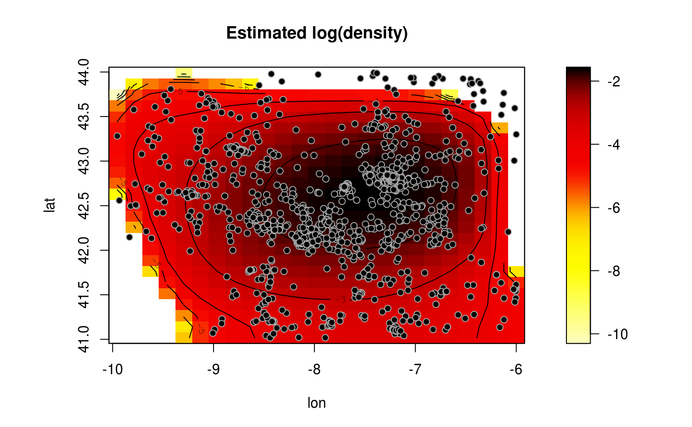
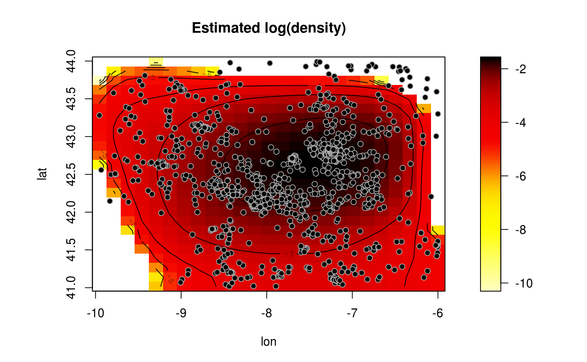

Selects the bandwidth of a local polynomial kernel (regression, density or variogram) estimator using (standard or modified) CV, GCV or MASE criteria.
h.cv(bin, ...)
# S3 method for bin.data
h.cv(
bin,
objective = c("CV", "GCV", "MASE"),
h.start = NULL,
h.lower = NULL,
h.upper = NULL,
degree = 1,
ncv = ifelse(objective == "CV", 2, 0),
cov.bin = NULL,
DEalgorithm = FALSE,
warn = TRUE,
tol.mask = npsp.tolerance(2),
...
)
# S3 method for bin.den
h.cv(
bin,
h.start = NULL,
h.lower = NULL,
h.upper = NULL,
degree = 1,
ncv = 2,
DEalgorithm = FALSE,
...
)
# S3 method for svar.bin
h.cv(
bin,
loss = c("MRSE", "MRAE", "MSE", "MAE"),
h.start = NULL,
h.lower = NULL,
h.upper = NULL,
degree = 1,
ncv = 1,
DEalgorithm = FALSE,
warn = FALSE,
...
)
hcv.data(
bin,
objective = c("CV", "GCV", "MASE"),
h.start = NULL,
h.lower = NULL,
h.upper = NULL,
degree = 1,
ncv = ifelse(objective == "CV", 1, 0),
cov.dat = NULL,
DEalgorithm = FALSE,
warn = TRUE,
...
)Arguments
- bin
object used to select a method (binned data, binned density or binned semivariogram).
- ...
further arguments passed to or from other methods (e.g. parameters of the optimization routine).
- objective
character; optimal criterion to be used ("CV", "GCV" or "MASE").
- h.start
vector; initial values for the parameters (diagonal elements) to be optimized over. If
DEalgorithm == FALSE(otherwise not used), defaults to(3 + ncv) * lag, wherelag = bin$grid$lag.- h.lower
vector; lower bounds on each parameter (diagonal elements) to be optimized. Defaults to
(1.5 + ncv) * bin$grid$lag.- h.upper
vector; upper bounds on each parameter (diagonal elements) to be optimized. Defaults to
1.5 * dim(bin) * bin$grid$lag.- degree
degree of the local polynomial used. Defaults to 1 (local linear estimation).
- ncv
integer; determines the number of cells leaved out in each dimension. (0 to GCV considering all the data, \(>0\) to traditional or modified cross-validation). See "Details" bellow.
- cov.bin
(optional) covariance matrix of the binned data or semivariogram model (
svarmod-class) of the (unbinned) data. Defaults to the identity matrix.- DEalgorithm
logical; if
TRUE, the differential evolution optimization algorithm in package DEoptim is used.- warn
logical; sets the handling of warning messages (normally due to the lack of data in some neighborhoods). If
FALSEall warnings are ignored.- tol.mask
tolerance used in the aproximations. Defaults to
npsp.tolerance(2).- loss
character; CV error. See "Details" bellow.
- cov.dat
covariance matrix of the data or semivariogram model (of class extending
svarmod). Defaults to the identity matrix (uncorrelated data).
Value
Returns a list containing the following 3 components:
- h
the best (diagonal) bandwidth matrix found.
- value
the value of the objective function corresponding to
h.- objective
the criterion used.
Details
Currently, only diagonal bandwidths are supported.
h.cv methods use binning approximations to the objective function values
(in almost all cases, an averaged squared error).
If ncv > 0, estimates are computed by leaving out binning cells with indexes within
the intervals \([x_i - ncv + 1, x_i + ncv - 1]\), at each dimension i, where \(x\)
denotes the index of the estimation location. \(ncv = 1\) corresponds with
traditional cross-validation and \(ncv > 1\) with modified CV
(it may be appropriate for dependent data; see e.g. Chu and Marron, 1991, for the one dimensional case).
Setting ncv >= 2 would be recommended for sparse data (as linear binning is used).
For standard GCV, set ncv = 0 (the whole data would be used).
For theoretical MASE, set bin = binning(x, y = trend.teor), cov = cov.teor and ncv = 0.
If DEalgorithm == FALSE, the "L-BFGS-B" method in optim is used.
The different options for the argument loss in h.cv.svar.bin() define the CV error
considered in semivariogram estimation:
"MSE"Mean squared error
"MRSE"Mean relative squared error
"MAE"Mean absolute error
"MRAE"Mean relative absolute error
hcv.data evaluates the objective function at the original data
(combining a binning approximation to the nonparametric estimates with a linear interpolation),
this can be very slow (and memory demanding; consider using h.cv instead).
If ncv > 1 (modified CV), a similar algorithm to that in h.cv is used,
estimates are computed by leaving out binning cells with indexes within
the intervals \([x_i - ncv + 1, x_i + ncv - 1]\).
References
Chu, C.K. and Marron, J.S. (1991) Comparison of Two Bandwidth Selectors with Dependent Errors. The Annals of Statistics, 19, 1906-1918.
Francisco-Fernandez M. and Opsomer J.D. (2005) Smoothing parameter selection methods for nonparametric regression with spatially correlated errors. Canadian Journal of Statistics, 33, 539-558.
Examples
# Trend estimation
bin <- binning(earthquakes[, c("lon", "lat")], earthquakes$mag)
hcv <- h.cv(bin, ncv = 2)
lp <- locpol(bin, h = hcv$h)
# Alternatively, `locpolhcv()` could be called instead of the previous code.
simage(lp, main = 'Smoothed magnitude')
contour(lp, add = TRUE)
with(earthquakes, points(lon, lat, pch = 20))
 # Density estimation
hden <- h.cv(as.bin.den(bin))
den <- np.den(bin, h = hden$h)
plot(den, main = 'Estimated log(density)')

# Density estimation
hden <- h.cv(as.bin.den(bin))
den <- np.den(bin, h = hden$h)
plot(den, main = 'Estimated log(density)')
